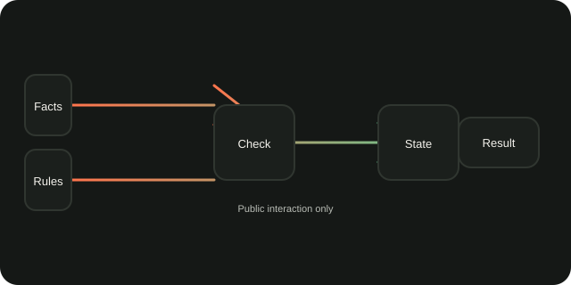

Production line release
Check the release path against supplied facts and rules.
Deterministic decision engineering
FlareMind is presented here through public effects only. The static page explains how an offline decision engine behaves at the edge, without showing implementation details.

Decision states
This demo uses fixed examples. It does not run inference.
Trusted
Evidence: matching facts are present and consistent.
Constraint simulation
Move the two controls. The result shows a public feasibility snapshot.
Feasible plan
Integration paths
Published readings
Four published sample sizes. No new values are produced here.
| Sample size | Average time (ms) | Throughput (queries/s) |
|---|---|---|
| 100 | 0.475 | 2,103 |
| 1,000 | 0.474 | 2,109 |
| 10,000 | 0.515 | 1,941 |
| 50,000 | 0.444 | 2,254 |
Application scenarios
Check the release path against supplied facts and rules.
Check document facts before the next workflow step.
Check order facts and give a traceable result.
Check behavior facts against defined role rules.
Check design facts against defined rule sets.
Apply the same public decision pattern to similar checks.